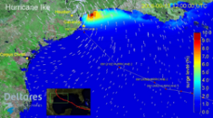

3. Models¶
Models
Currently Teakwood support five models: CaFunWAVE, Delft3D, SWAN, ADCIRC and FVCOM.
3.1. Delft3D¶
Delft3D, developed by Deltares(formerly Delft Hydraulics), is a flexible integrated modelling suite, which simulates two-dimensional (in either the horizontal or a vertical plane) and three-dimensional flow, sediment transport and morphology, waves, water quality and ecology and is capable of handling the interactions between these processes. After Delft3D-FLOW was open-sourced in 2011, more and more researchers started using Delft3D.
3.2. CaFunWAVE¶

CaFunwave is a port of the Funwave-TVD code developed by Dr. Fengyan Shi and his colleagues at the University of Delaware to the Cactus framework. By porting Funwave-TVD to the Cactus framework, we open the door to the possibility of using new tools, such as Adaptive Mesh Refinement (AMR), different time stepping schemes, and the Chemora GPU acceleration framework. A secondary advantage of the Cactus port is the ability to cross-check the codes against each other to improve correctness and accuracy. CaFunwave is capable of simulating storm surges, tsunamis, coastal nonlinear waves, wave-vegetation interaction, and breaking-generated near shore circulation.
3.3. SWAN¶

SWAN is a third-generation wave model that computes random, short-crested wind-generated waves in coastal regions and inland waters. SWAN accounts for the following physics: Wave propagation in time and space, shoaling, refraction due to current and depth, frequency shifting due to currents and non-stationary depth, Wave generation by wind, Three- and four-wave interactions, Whitecapping, bottom friction and depth-induced breaking, Dissipation due to vegetation, Wave-induced set-up, Propagation from laboratory up to global scales, Transmission through and reflection (specular and diffuse) against obstacles, and Diffraction.
3.4. ADCIRC¶

ADCIRC is a system of computer programs for solving time dependent, free surface circulation and transport problems in two and three dimensions. These programs utilize the finite element method in space allowing the use of highly flexible, unstructured grids. Typical ADCIRC applications have included: (i) modeling tides and wind driven circulation, (ii) analysis of hurricane storm surge and flooding, (iii) dredging feasibility and material disposal studies, (iv) larval transport studies, (v) near shore marine operations.
3.5. FVCOM¶
FVCOM is a prognostic, unstructured-grid, finite-volume, free-surface, 3-D primitive equation coastal ocean circulation model developed by UMASSD-WHOI joint efforts. The model consists of momentum, continuity, temperature, salinity and density equations and is closed physically and mathematically using turbulence closure sub-models. The horizontal grid is comprised of unstructured triangular cells and the irregular bottom is presented using generalized terrain-following coordinates.
Servers
Currently Teakwood provides conditional computing resources to our customers. more information about customer levels please navigate to here.